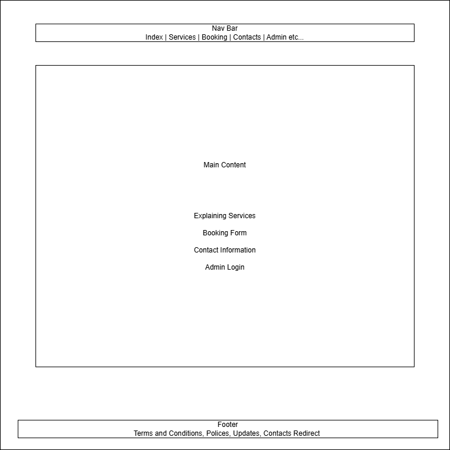
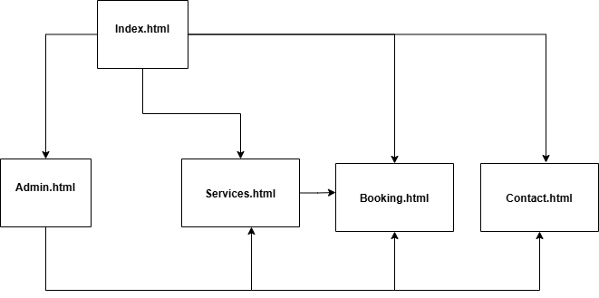

Application Description: This project involves creating a web application named "AppointEase" designed to streamline the appointment scheduling process for small service-based businesses and their clients. It will provide a user-friendly interface for customers to view available services and book appointments online, and an administrative interface for the business owner/staff to manage schedules, services, and client information.
Purpose: The primary purpose of AppointEase is to replace manual or phone-based appointment systems with an efficient, accessible, and automated online solution. This aims to reduce administrative overhead for the business, minimize booking errors, improve customer convenience by allowing 24/7 booking, and provide a clear overview of scheduled appointments.
Intended Users: There are two main groups of users:
Clients/Customers: Individuals seeking to book services offered by the business. They need an easy way to see service details, check availability, and schedule appointments.
Business Owner/Staff (Administrators): Individuals responsible for managing the business's services, schedule availability, viewing booked appointments, and potentially managing basic client information.
Content Overview: The website will feature a public-facing section including a homepage, service listings, a booking interface, and a contact page. It will also include a password-protected administrative section for managing appointments and settings.
Client Information
Name of the Client: Abdullah A.
Organization/Institute/Business: AA Home Renovation & Repair
Client’s Valid Email Address: [private]
Client’s Phone Number: [private]
Wireframe
A wireframe provides a blueprint of the webpage's structure and layout, focusing on the arrangement of elements, navigation, and user interface components before applying visual design. Below is the wireframe for the Home page (index.html) created using Draw.io.

Figure 1: Home Page Wireframe. Demonstrates layout including header/navigation, hero section, featured services overview, call-to-action button, and footer.
Site Map
The site map outlines the structure of the website, showing the different pages and the hierarchical relationship between them. This helps in planning navigation and understanding the overall scope of the application. The sitemap below includes the required five pages plus an admin section.

Figure 2: AppointEase Site Map. Illustrates navigation flow between Home, Services, Booking, Contact, and Admin Login/Dashboard pages.
The website will include the following pages:
index.html (Home Page)
services.html (Services Page)
booking.html (Booking Page)
contact.html (Contact Page)
admin.html (Admin Login/Dashboard Page)
A consistent navigation bar will allow single-click access to Home, Services, Booking, and Contact. Access to the Admin page might be via a separate login link, perhaps in the footer or header.
Page Design
Detailed design specifications for each page identified in the sitemap:
1. Home Page (index.html)
Purpose: Introduce the business (AA Home Renovation & Repair), highlight key services, provide trust signals, and guide users towards booking or learning more.
Audience/Users: Potential and existing customers.
Content: Business name/logo, compelling headline, brief description, high-quality imagery, overview of popular services, possibly testimonials, clear call-to-action ("Book Now" button), footer with contact info/links.
Data Entry: No.
Validations: N/A.
Controls: Hyperlinks (Navigation Bar, service links, Call-to-Action button).
Actions: Clicking navigation links loads respective pages. Clicking "Book Now" or service links might navigate to the Services or Booking page.
2. Services Page (services.html)
Purpose: Provide detailed information about all services offered, including descriptions, duration, and pricing.
Audience/Users: Potential and existing customers evaluating options.
Content: List of services categorized if necessary. Each service entry includes name, detailed description, duration, price. May include images relevant to services. "Book Now" button associated with each service or a general one.
Data Entry: No.
Validations: N/A.
Controls: Hyperlinks (Navigation Bar), Buttons ("Book Now" per service or general).
Actions: Clicking "Book Now" could navigate to the Booking page, potentially pre-selecting the chosen service.
3. Booking Page (booking.html)
Purpose: Allow customers to select a service, choose an available date and time, and provide their contact information to book an appointment.
Audience/Users: Customers ready to book.
Content: Service selection (dropdown or list), Calendar for date selection, Time slot selection (dynamically populated based on date and service), Form for Name, Email, Phone number, Optional notes field.
Data Entry: Yes.
Validations: Required fields (Name, Email, Phone, Service, Date, Time). Email format validation. Date/Time logic (cannot book in the past, must select available slot).
Controls: Dropdown (Services), Datepicker (Calendar), Radio Buttons/List (Time slots), Text Inputs (Name, Email, Phone), Textarea (Notes), Button ("Confirm Booking").
Actions:
Selecting a date triggers fetching available time slots.
Clicking "Confirm Booking" validates the form data.
On successful validation, submits the booking data.
Navigates to a confirmation message/page or displays an inline success/error message.
4. Contact Page (contact.html)
Purpose: Provide ways for users to contact the business, including a contact form, phone number, email address, physical address, and possibly a map.
Audience/Users: Potential and existing customers with inquiries.
Content: Contact form (Name, Email, Subject, Message), Business phone number, Business email address, Physical address, Operating hours.
Data Entry: Yes (Contact Form).
Validations: Required fields (Name, Email, Message). Email format validation.
Actions: Clicking "Send Message" validates the form. On success, sends the message data and displays a success confirmation .
5. Admin Login / Dashboard (admin.html)
Purpose: Allow authorized staff/owner to log in and manage appointments (view, possibly cancel/modify), manage service offerings, and view schedule availability.
Audience/Users: Business Owner/Staff (Administrators).
Dashboard View (Post-Login): Overview of upcoming appointments (list or calendar view), options to view/manage appointments, possibly links to manage services or availability settings.
Data Entry: Yes (Login credentials, potentially edits to appointments/services).
Validations: Required fields (Username, Password). Server-side validation for login credentials. Validation for any data edits made.
Controls: Text Inputs (Login), Password Input (Login), Buttons ("Login", potentially "Save Changes", "Cancel Appointment"), Table/Calendar display, Links/Buttons for navigation within the admin area.
The website will incorporate JavaScript and PHP to enhance user experience and provide interactive features:
Interactive Booking Form (booking.html):
Functionality: A multi-step or dynamic form for selecting services, date, and time, followed by user information input.
A Date picker will be used for easy and intuitive date selection.
Available time slots will be dynamically loaded based on the selected date (and potentially service), likely using PHP and Lite SQL to query available slots without reloading the page.
Client-side form validation using JavaScript will check for required fields, email format, etc., before submission, providing immediate feedback to the user.
Form submission might use PHP and Lite SQL DB to send the booking data to the server and display a success or error message without a full page refresh, enhancing the user experience.
Why: Makes the booking process smooth, intuitive, and efficient. Reduces user error and provides instant feedback.
Example URLs:Calendly (complex scheduling), many online booking systems for salons, doctors, etc.
Admin Appointment Management (admin.html):
Functionality: Displaying the list or calendar of appointments. PHP and Lite SQL could be used to:
Fetch and display appointments dynamically.
Allow admins to cancel or modify appointment statuses without full page reloads.
Potentially filter or sort appointments based on date or status.
Why: Provides administrators with a responsive and efficient interface for managing the schedule.
Example URLs: Features found in many CMS dashboards (like WordPress post management) or project management tools (like Trello card updates).
Contact Form Submission (contact.html):
Functionality: Use JavaScript for client-side validation. Implement PHP and Lite SQl submission to send the form data and display a "Message Sent!" or error notification directly on the page without navigating away.
Why: Improves user experience by providing immediate feedback without disrupting their place on the site.
Example URLs: Most modern website contact forms utilize this pattern.
Consistent Header/Footer Loading:
Functionality: The provided `html_include.js` script likely uses JavaScript to load `components/header.html` and `components/footer.html` into each page.
Why: Ensures consistency across all pages and makes updates easier (only need to edit the component files).
Example URLs: This is a common development pattern, often handled by frameworks or simple custom scripts like the one provided.